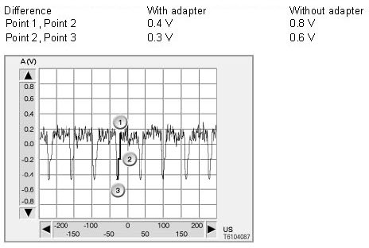
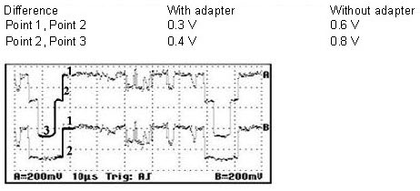
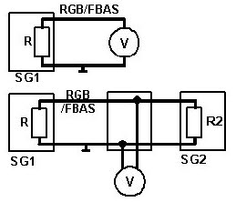

Picture Signals CVBS and RGB
Picture Signals CVBS And RGB
Recorded signal paths
The following signal paths can deviate from the voltage values. The sequence should, however, match at the marked positions.
Signal path CVBS signal
For the CVBS signal, the colour information of the colors green, red and blue is transmitted across a single cable. The signal path has three important points that are independent of the image transmitted at that moment. This is why these points are used for measurement
For measurement, the following voltage differences must be examined.

Signal path RGB signal
For the RGB signal, the picture information is transmitted across three cables separated by colour. Red, green and blue. The synchronization of the RGB signal is implemented via the green signal. The signal path has points that are independent of the image shown. These points are used for measurement
For measurement, the following voltage differences must be examined.

Measurement with and without adapter
In the case of measurement without adapter, the second control unit (SG2) is disconnected. Upper circuit. For this measurement, the signal level is only measured via the resistance R. This is why a measurement without adapter leads to a double signal level.
In the case of measurement with adapter, the second control unit (SG2) remains connected. The signal level is then measured via the parallel circuit of resistances R and R2. Lower circuit.
